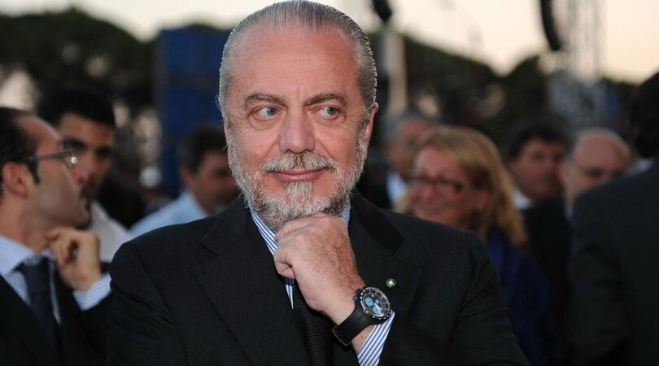
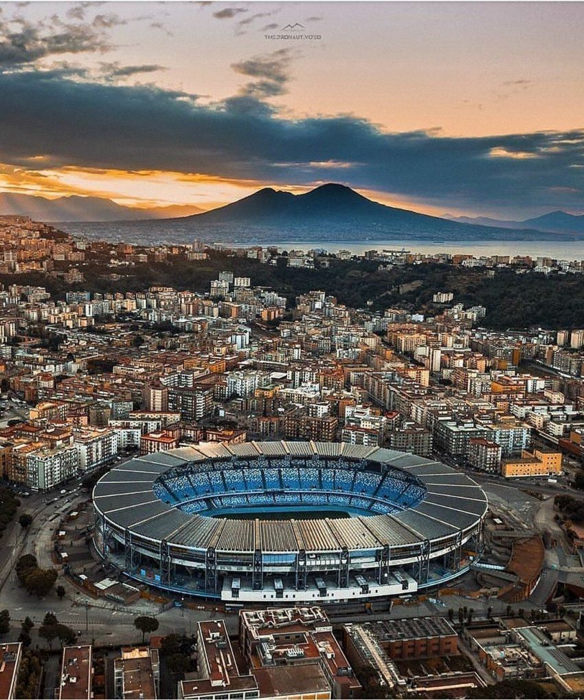
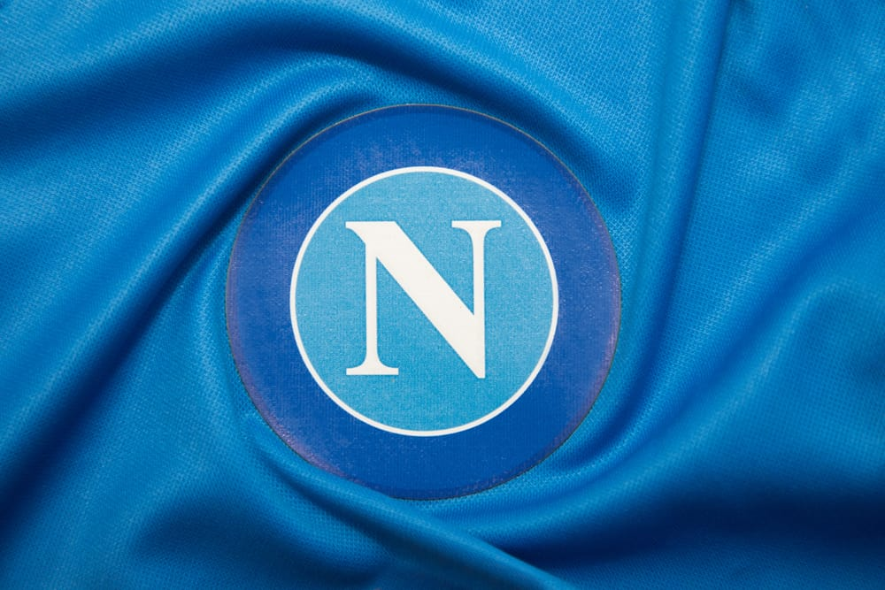

the club Area
THE CLUB
SSC Napoli SpA has always been one of the most popular football teams in Italy. As it emerges, in fact, from many market surveys carried out by specialized clubs, the Neapolitan club can count on a fan base that ranks in the top four in Italy, for the number and for the strong spirit of belonging shown by its fans.
In over eighty years of history, Napoli has been able to conquer a glorious "palmares", which boasts prestigious achievements in Italy and also in the international field such as 2 Scudetti - 6 Italian Cups - 2 Italian Super Cups - 1 UEFA Cup, etc.
The most exciting period in the history of Napoli coincides with the second half of the eighties, when, together with other prestigious champions, the strongest player in the world played in the ranks of Napoli, namely Diego Armando Maradona.
-

In 2004, when SSC Naples went bankrupt after 78 years with a debt of 70 million, De Laurentis acquired Naples in Serie C for 39 million with the dream of rebuilding it to the glory days of Diego Maradona's 1980s.
-

It is a multi-purpose stadium with track and field tracks [2], the third largest stadium in Italy after Stadio Giuseppe Meacha and Stadio Olimpico.
-

Partenope is the old place name of Naples and means 'Naples citizen'. Napoli FC, the predecessor of SSC Naples, was founded in 1906
Dopo la scomparsa di Maradona (25 novembre 2020)
Lo Stadio Diego Armando Maradona (ex Stadio San Paolo) di Napoli, inaugurato nel 1959, è il terzo in Italia per capacità
THE MISSION
-
- The new Napoli of Aurelio De Laurentiis
- s a club with modern and ambitious programs, which from a sporting point of view, after having achieved promotion to Serie A in just 3 years, sets itself the goal of the international audience, which is undoubtedly the most appropriate to the size and basin of the Club.
- The most exciting period in the history of Napoli coincides with the second half of the eighties, when, together with other prestigious champions, the strongest player in the world played in the ranks of Napoli, namely Diego Armando Maradona.
-
- The goal of Napoli
- The goal of Napoli is also to transform itself in a short time, into a real entertainment company, offering, in the future, to its fans and partners, something more than a simple football match, accompanying the sporting event with ample and qualified moments of show and entertainment.
-
- corporate point of view,
- the mission is the creation of brand equity, i.e. the realization of that complex mix of elements, which through the pursuit of objectives linked to brand awareness and loyalty, to the perception of quality, to differentiation in the within the competitive market of reference, add value to consolidate international partnerships.